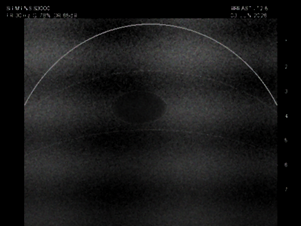
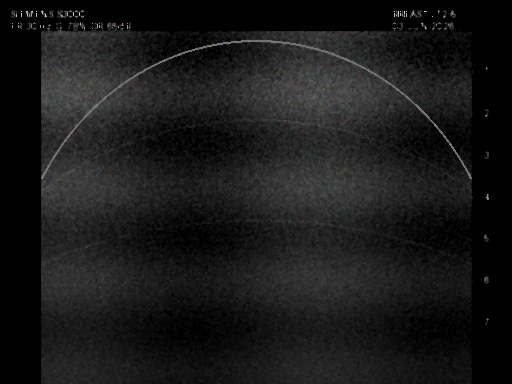

Breast Cancer Detection Dashboard
Upload a breast ultrasound or CT scan to run deep learning semantic segmentation.
Scan Ingestion
Drag & drop scan here
or browse files from computer
Supports PNG, JPG, JPEGVisualization Settings
#f43f5e
Demo Sample Scans


Diagnostic Visualizer
Awaiting Scan Input
Upload a breast ultrasound or select one of the demo scans from the left panel to execute cancer detection and view segmentation boundaries.